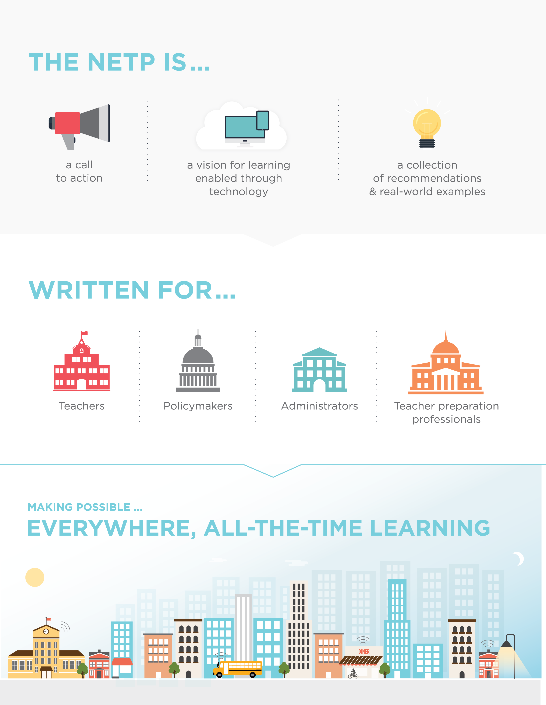

Welcome to Technology!
“A big challenge is that not all students have devices, so we try to purchase as many as we can to make up the difference; but we are in a low socio-economic area so it is hard to set high fundraising goals for technology.”
— Elementary school, Hamilton-Wentworth Catholic DSB —
-Technology can be a powerful tool for transforming learning. It can help affirm and advance relationships between educators and students, reinvent our approaches to learning and collaboration, shrink long-standing equity and accessibility gaps, and adapt learning experiences to meet the needs of all learners.
-Our schools, community colleges, and universities should be incubators of exploration and invention. Educators should be collaborators in learning, seeking new knowledge and constantly acquiring new skills alongside their students. Education leaders should set a vision for creating learning experiences that provide the right tools and supports for all learners to thrive.
-However, to realize fully the benefits of technology in our education system and provide authentic learning experiences, educators need to use technology effectively in their practice. Furthermore, education stakeholders should commit to working together to use technology to improve American education. These stakeholders include leaders; teachers, faculty, and other educators; researchers; policymakers; funders; technology developers; community members and organizations; and learners and their families.
The Departrment of Technology sets a national vision and plan for learning enabled by technology through building on the work of leading education researchers; district, school, and higher education leaders; classroom teachers; developers; entrepreneurs; and nonprofit organizations.
Complete the Student Registration Form. To fill out the form electronically, please download and save the PDF first. A scanned version completed by hand is also acceptable. Registration forms must be completed by the Parent/Guardian, or student if 18 years of age or older. Once the Student Registration Form is complete, please contact the school to complete the registration process. Please refer to the ANB High School Registration Contact Information.
Mandatory Documents to Complete Registration.
Once the Student Registration Form is received by the school contact, the school will acknowledge receipt of the Student Registration Form and share the process for providing the mandatory documents to enter your child(ren) in the system.
These include:
Phone number: +1 *** *** ***
Mail: anbhighschool@gmail.com/anbswimmingclub@gmail.com